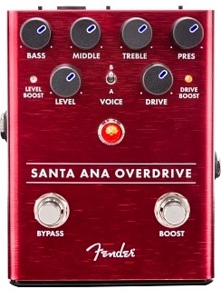
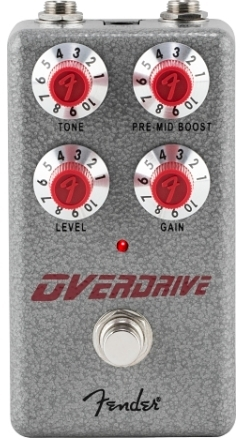

We helped generate the classic guitar tones that inspired players to create new music, and now with the Santa Ana Overdrive, we've brought our expertise to stompboxes. Armed with FET technology, this pedal lets you dial in sounds varying from "just a little hairy" all the way to thick, fully saturated overdrive. The flexible tone controls unlock a wide range of sonic flavors. This pedal cleans up with the guitar's volume control, just like our famous amplifiers.
Overdrive pedals come in all different shapes and sizes, and there are probably more different types of overdrive pedals than any other gain pedals out there, so even if you’ve tried one and didn’t like it, there’s something out there for you! Generally, the characteristics of overdrive are that they aim to sound like an amp that is naturally overdriving, so produce less gain and sound less aggressive than distortion or fuzz pedals, most overdrive pedals are used for low to mid gain sounds, like blues and rock.
Usually, this effect is achieved by using a soft-clipping circuit, which mimics the characteristics of a slightly overdriving amp. Soft-clipping occurs when the signal exceeds the clean headroom, and compresses the waveform, which produces a smoother type of gain than more aggressive distortion pedals that generally use hard-clipping
The Tube Screamer is the most famous category of overdrive pedal and is characterised by its distinctive EQ curve. Most pedals based on this style of overdrive will be soft-clipping and generally will cut bass and add lots of mid-range, which can add thickness to a clean-ish sound, or tighten up a high gain sound. It boosts the perfect frequencies (right around 700-1K Hz) to cut through any mix. So whether you play high-gain and you’re looking to tighten your sound, or you want that famous Stevie Ray Vaughan raunchy blues sound – look no further than the Tube Screamer!
The search for the best overdrive pedal is something that guitar players will never cease to pursue. There are so many options out there, and they’re an incredibly useful tool for such a wide range of players. Much like having a nice guitar and a good amp, a decent overdrive pedal is something that a lot of guitarists can’t live without.
Overdrive pedals vary so much, and there’s a bit of crossover with boost, distortion and fuzz pedals. However, without going too much into the technical side of things, an overdrive pedal essentially helps add some gain to your signal.
The best overdrive pedal for one person might be something that pushes their tube amp into a more natural overdrive and retains all the tonal characteristics of the guitar, however, someone with a solid-state amp might prefer something that adds a bit more ‘something’ to their existing sound. You can even get overdrive pedals that offer the breakup sound of some classic tube amps. Overdrive can be a great effect to always have on, or it can be used to boost a clean sound for solos, or it can be paired with other pedals – there are seemingly limitless ways they can be used.
Some of the pedals in this guide are clones of old classics, and others are newer designs utilizing modern technology. However, all of them are great options for anyone looking to add something special to their rig. We’ve even added some buying advice further down this article to help you find the best overdrive pedal for you and your needs.